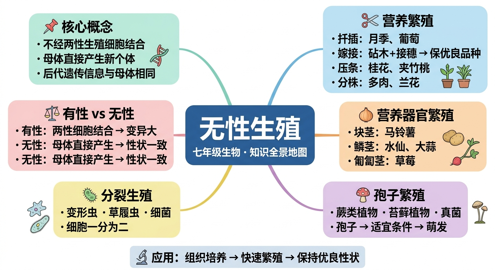

探索扦插、嫁接、压条、孢子等不需要两性细胞结合的繁殖方式

月季插一段枝条就能长出新植株；苹果通过嫁接保持优良品种；土豆的芽眼能长出新植株……
这些都没有经过受精，也没有种子，那新个体的遗传物质从哪里来？这种繁殖方式有什么优缺点？
本课将带你认识无性生殖的概念，掌握扦插、嫁接、压条、分株、孢子繁殖等常见方式，理解各方式的原理和应用。
枝条插入土中生根
砧木与接穗结合
枝条压土生根后剪断
马铃薯（块茎）、水仙（鳞茎）；营养器官直接萌发
蕨类、苔藓；孢子在适宜条件下萌发
变形虫、草履虫；细胞一分为二
无性生殖是指不经过两性生殖细胞的结合，由母体直接产生新个体的生殖方式。
特点：后代的遗传物质与母体完全相同（除突变外），能保持亲本的优良性状。
月季、葡萄；将枝条插入土壤，生根后独立生长
果树（苹果/梨）；砧木提供根系，接穗保留优良品种
桂花、龙眼；枝条压入土中生根，再与母株分离
马铃薯（块茎）、水仙（鳞茎）；营养器官直接萌发
蕨类、苔藓；孢子在适宜条件下萌发
变形虫、草履虫；细胞一分为二
| 比较项目 | 有性生殖 | 无性生殖 |
|---|---|---|
| 是否需要精卵结合 | 需要 | 不需要 |
| 后代遗传多样性 | 较高 | 较低（与亲本相同） |
| 保持亲本优良性状 | 不稳定 | 稳定 |
| 繁殖速度 | 较慢 | 较快 |